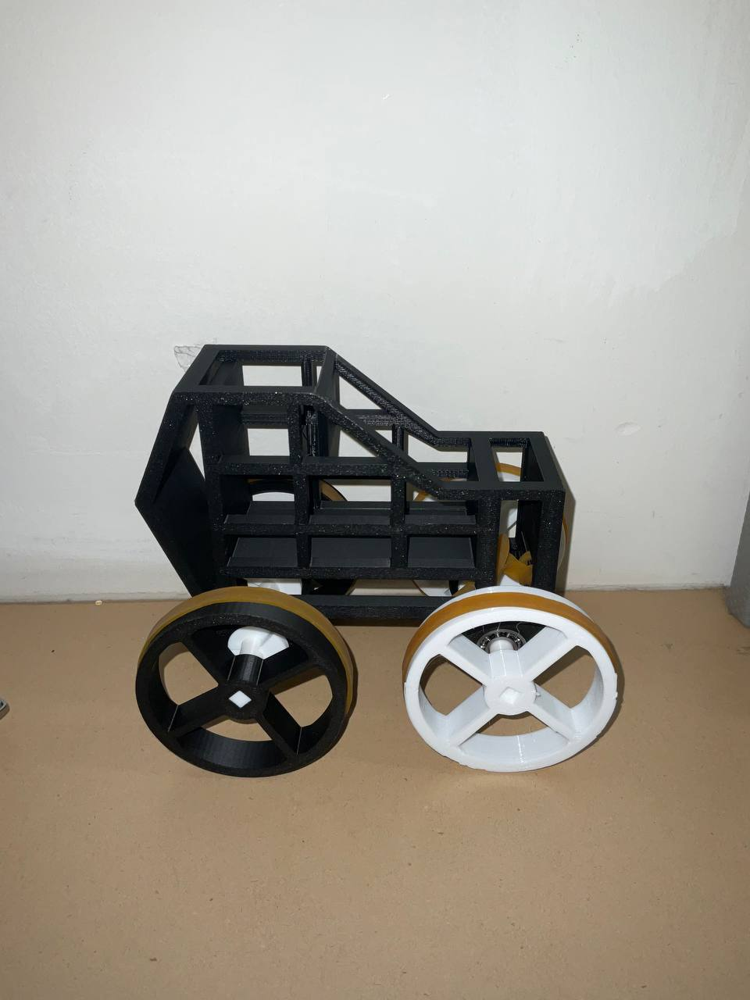
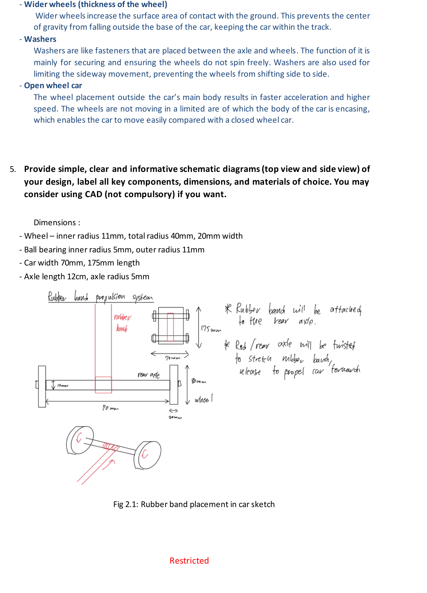
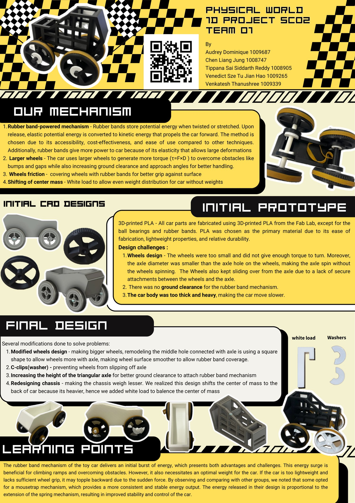

A 3D-printed toy car built to run an obstacle course of ramps, rough surfaces, and vertical steps using nothing but a twisted rubber band for propulsion. After weighing springs, compressed air, and rubber bands on cost, feasibility, and ease of modification, we built around a rubber-band drive shaft — then iterated the wheels, axle, and chassis until it could actually clear the course.
View Project Poster View Full Worksheet
Rubber band twisted around the rear drive shaft, k ≈ 35.5 N/m
40mm total radius, 20mm width, square axle hole for a slip-free grip
70mm x 175mm, 3D-printed PLA, open-wheel layout
3D-printed PLA throughout, except ball bearings and rubber bands
Three propulsion methods were on the table: springs, compressed air, and rubber bands. Springs were durable but hard to modify and had limited speed control. Compressed air gave high speed potential but was expensive to remodel, prone to leaks, and hogged space needed for ballast. Rubber bands won on accessibility, cost, and how easily the setup could be tuned — add, remove, or swap bands for more or less power — even though they demanded more careful control of direction and speed.

Larger wheels generate more torque (τ = F × D) to clear bumps and gaps, while also raising ground clearance and the car's approach angle onto ramps and steps.
Ball bearings at the front axle cut friction for smoother, faster spin, while slick, wide tires increase grip against the ground to keep the car tracking straight.
Washers between axle and wheel stop sideways slip and keep the wheels spinning true, while a low center of gravity keeps the car from toppling over on bouncy surfaces.
The full build — mechanism, iterations, and final design — as it appeared on our project poster.

Elastic potential energy stored in the twisted rubber band converts to kinetic and gravitational potential energy as the car climbs the ramp and pushes through friction on rough and bouncy surfaces:
½kx² = ½mv² + mgh + Wfriction
| Quantity | Value | Quantity | Value |
|---|---|---|---|
| Spring constant, k | 35.5 N/m | Car mass, m | 1 kg |
| Kinetic friction, μk | 0.9 | Static friction, μs | 0.6 |
| GPE up the 15° slope | 1.290 J | Friction work done | 7.358 J |
| Total energy required | 8.753 J | Extension needed | 0.7 m |
Three challenges drove every design decision: getting up the ramp, overcoming rough surfaces, and simply staying on track — each pointed straight at maximizing spring constant and extension while keeping the car planted.
Torque τ = F × D means a larger wheel diameter directly buys more force to climb the 1–4cm vertical steps on the course — the single biggest lever available for clearing obstacles.
Mounting the wheels outside the main body, rather than enclosing them, let the car accelerate faster since the wheels aren't constrained by the chassis shape.
Comparing notes with other teams, a mousetrap mechanism releases energy proportional to spring extension throughout the run, giving steadier, more controllable output than the rubber band's single initial burst.